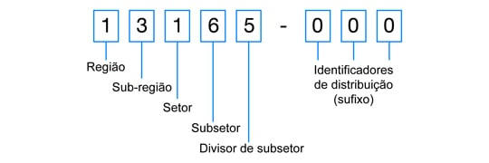

Fala pexadas!!!
No artigo de hoje, venho trazer um problema que me deparei no natal de 2021 ao trabalhar com CEP. Como um bom estudante de computação, arrumei uma solução que fosse no mínimo “sub-ótima” para o problema. Espero que gostem da solução.
Vamos separar esse artigo da seguinte forma:
1 - Vamos fazer uma pequena introdução sobre como funciona um CEP;
2 - Vou fazer uma introdução sobre o problema a ser resolvido e mostrar a primeira solução implementada;
3 - Mostrar a solução otimizada.
1 - Introdução
A sigla CEP significa Código de Endereçamento Postal, foi criado em 1972 e consiste em um conjunto composto por 8 números, criado para acelerar o tratamento e encaminhamento de objetos de correspondência que fosse capaz de identificar uma localidade em sua forma mais específica.
Cada parte do CEP tem um significado. Da esquerda para a direita, os números indicam a região, sub-região, setor, sub-setor, divisor de sub-setor e identificadores de distribuição. A figura abaixo ilustra essa divisão.

De forma mais genérica, um CEP atualmente tem uma capacidade de representar um logradouro (rua, avenida…) de forma única. Sendo assim nos sistemas atuais que dependam de uma entrega ou de uma identificação do endereço, ele é muito utilizado e talvez seja a única forma de desempenhar essa tarefa.
2 - Problema
Desenvolvendo um sistema para uma corretora de seguros, deparei-me com a seguinte situação. O sistema deveria ser capaz de:
- Dado um CEP, verificar se o mesmo estaria numa lista de CEPs “restritos”, e caso estivesse, o sistema deveria impedir a contratação do seguro.
Os desenvolvedore que criaram a primeira versão dessa solução, resolveram o problema da seguinte maneira:
- Inseria uma lista de CEPs em formato JSON no banco de dados, e quando precisava verificar o CEP que estava sendo contratado, carregava-se essa lista do banco de dados em memória, transformava em uma implementação da interface List (em Java) e usava o método .contains() .
Depois dos testes feitos pela equipe de engenharia, os QAs confirmaram a corretude da solução. Após essas etapas a seguradora faz um teste para verificar a usabilidade da feature. Aí começou a dor de cabeça.
No momento do teste feito pela seguradora, somente o tempo da consulta do banco de dados estavam em torno de 5 segundos, sendo que temos um Timeout de 3s. Alguma coisa errada não está certa!!!!
Em uma análise mais profunda, verificamos que a seguradora, havia incluido uma lista de CEPs que era uma sequência iniciando pelo cep menor para o CEP maior lexograficamente. Por exemplo, de 48000-000 até 50000-000. Confirmamos essas informações com o pessoal da unidade e de fato foi confirmado.
Vamos fazer uma conta de “padaria”:
Um CEP possui 8 dígitos. Cada dígito possui 8 bits(1 byte). De 48000-000 até 50000-000 temos 2 milhões de CEPs. Logo temos:2.000.000 / 1024 Bytes = 1953 KB => aproximadamente 2 MB
Então temos algo em torno 1 MB para cada milhão de CEPs. E para o nosso espanto, a seguradora estava criando algumas listas que geravam quase 6MB de informação em somente 1 campo do banco de dados.
Sendo assim, precisamos resolver esse problema.
3 - Solução
A primeira coisa é alinhar com o pessoal de negócio que essas listas mantivessem esse padrão de utilização do menor para o maior CEP lexograficamente. Sendo assim no exemplo acima de 48000-000 até 50000-000, eu guardaria somente os 2 CEPs no banco de dados. Logo eu unifico o tamanho do campo no banco de dados para 16 bytes.
Logo depois, eu precisei criar um algoritmo para poder tratar alguns casos e identificar se o CEP informado durante a contratação de um seguro, se encontra dentro de alguns desses ranges de CEPs cadastrados no banco de dados.
A segunda coisa é tratar os casos onde o CEP iniciasse com o número 0. Se tratássemos como um número, o dígito mais significativo (o que fica a esquerda), caso seja 0, não tem valor para o número final. Para resolver esse problema, colocamos o CEP como casas decimais de um número decimal. Assim os 0 localizados à esquerda teriam valor.
O exemplo abaixo demonstra esse problema na prática:
| Valor String | Valor Numérico |
|---|---|
| “06000010” | 6000010 |
Esse problema foi resolvido, transformando o CEP em número flutuante.
| Valor String | Valor Numérico |
|---|---|
| “06000010” | 1.06000010 |
E para comparar se um CEP se encontrava em meio a um range de CEPs, implementamos o código abaixo:
1 | protected boolean validaIntervaloCep(String CepDe, String CepAte, String CepAvaliado) { |
Conclusão
Essa solução simples de como lidar com CEPs, trouxe um ganho muito grande de desempenho para a aplicação, sem contar na economia de espaço no banco de dados.
Um pouco de análise do problema e trazendo o algoritmo para um local mais perto do computador (trabalhar com números), faz com que muitos problemas sejam evitados durante esse processo.